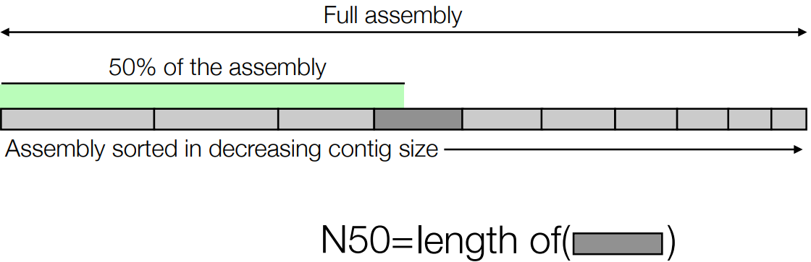

5 Annotation
Genome evolution, which is how the genetic information in living things changes over time, happens in two main ways. These ways are like two different strategies that genes use to change and adapt.
The first way is called whole genome multiplication. Imagine if you had a favorite book, and you made a copy of the entire book. Then, you made another copy, so you had three identical books. In the same way, sometimes in genomes, the whole set of genes gets duplicated or even triplicated. This means there are extra copies of all the genes.
The second way is small scale duplication, and it’s a bit like making copies of individual chapters or pages from your favorite book. There are two types of small scale duplication: “segmental duplication” and “tandem duplication.”
Segmental duplication is when certain sections of the genome, like chapters in a book, are copied more than once. This can lead to having extra copies of specific genes, which can be useful for evolution.
Tandem duplication is a little different. It’s like having two or more paragraphs on the same page that are exactly the same. In this case, genes are duplicated one right after the other in a row.
5.1 Whole Genome Duplications
In the above example, we have a genome from two different organisms - one blue and one orange.
If the genomes of two organisms come together, this is called an autopolyploid. Otherwise, this is called an alloalyploid.
When genome evolution happens through whole genome duplications, it’s like making an identical copy of the entire set of genes. Imagine you have a long list of items, and you make an exact duplicate of that list. Here’s what happens:
Right after the duplication, the genes in both copies are in the same order, which scientists call “synteny.” It’s like having the same items in the same order on both lists.
But, as time goes by, some changes occur:
Fractionation
This is when the genome starts to change. Some genes get lost because they become redundant (like having two identical items on your list), and random mutations can also affect genes.
Genome rearrangements
Think of this as reshuffling the items on your list. The order of genes can change.
Syntenic blocks
Even after a long time, there are still some parts of the genome where a bunch of genes look very similar to another bunch. It’s like having sections of your list that are almost the same as sections in the duplicate list.
Diploid form
Eventually, the genome organizes itself back into a diploid form. This means it goes back to having two sets of genes, like you have one original list and one duplicate list, but with some changes.
5.1.1 Genome Duplication in Organisms
5.1.1.1 Plants
Genome duplications happen quite often in the evolution of plants. It’s like when you have a favorite plant and it suddenly makes extra copies of all its genetic instructions. Here are some examples:
Ancient Hexaploid Event in Eudicots: About 150 million years ago, a group of plants called Eudicots had a special event where their entire set of genes got duplicated not just once, but three times! It's like having three identical instruction manuals for a plant.Grape
After that ancient event, some plants like grapes didn’t have any more big duplications. So, they just kept the three copies they had and didn’t make any new ones.
Poplar
On the other hand, poplar, which is another type of plant, recently had a whole genome duplication event. This means it made a fresh copy of all its genes, so it now has two sets of instructions.
Arabidopsis
Arabidopsis, yet another type of plant, had two whole genome duplication events in its history. So, it’s like having three instruction manuals originally, then copying them twice more, for a total of six!
5.1.1.2 Fish
In the world of minnows and carps, which belong to a group called Cyprininae, there are around 1,300 different species. Now, here’s something interesting: approximately 400 of these species are what we call “polyploid.”
Polyploid is a special term that tells us these species have more than the usual set of genetic instructions. It’s like having extra copies of a recipe book. In the case of these minnows and carps, having extra genetic copies can sometimes be a helpful adaptation. It’s a bit like having extra tools in your toolbox—they can be useful for different situations.
5.1.2 Comparing Genomes
A dot plot is like a cool tool scientists use to compare different genomes, which are like the instruction manuals for living things. Here’s how it works:
First, imagine you have a bunch of genes from two different organisms, and you want to see how similar they are. The dot plot helps you visualize this by showing dots where genes are similar.
At first, it looks a bit messy with lots of dots. But, at a basic level, it helps us find pairs of genes that are kind of like neighbors in the instruction manuals. These are called syntenic gene pairs, and they might be important for understanding how organisms are related.
If we want to get even more detailed, we can study these syntenic gene pairs more closely. It’s like zooming in on those neighbor genes to see exactly how they match up.
One way to find these syntenic blocks, which are groups of similar genes, is to use a special program called DAGchainer. It’s like a detective that helps us find these important blocks in the instruction manuals.
DAGchainer uses a smart method called dynamic programming to do this. Think of it like a super organized way to solve puzzles and find important patterns in the genes. So, dot plots and programs like DAGchainer are tools scientists use to uncover the secrets hidden in genomes!
5.1.3 Exploring Whole Genome Duplications with Synteny
Imagine you have two sets of genes from different organisms, and you want to figure out when they had a big duplication event. Synteny is like a tool that helps us with this detective work.
First, scientists do something called pairwise alignment, which is like comparing the two sets of genes to see which ones match up. These matching gene pairs are called syntenic gene pairs.
Now, here’s the cool part: we can look at how many “synonymous substitutions” have happened in these gene pairs. Synonymous substitutions are like small changes in the genes that don’t really affect how the protein is made or its building blocks (amino acids).
By counting these mutations, it’s kind of like using a molecular clock. This clock tells us how much time has passed since the big gene duplication happened. Just like a clock helps us keep track of time, counting these mutations helps scientists figure out when the duplication event took place.
5.1.4 Functional Biases on Gene Origins
When we talk about how genes work and where they come from, there are two main ways genes can be duplicated: Whole Genome Duplication (WGD) and Tandem Duplication. These two processes can affect how genes function.
In the case of Whole Genome Duplication (WGD), there’s something called the dosage-balance hypothesis. This means that genes that are really important and highly connected in the cell are usually kept around when gene duplication happens. Think of it like keeping the most important players on your sports team. These important genes often include things like transcription factors and regulators, which are like the coaches and referees of the cell.
On the other hand, with Tandem Duplication, it’s more about recent adaptations. Imagine if you have a group of friends, and you suddenly need to deal with a new challenge, like a surprise test. You might quickly form a study group with the friends who are best at that subject. Similarly, genes that are duplicated in tandem, one after the other, often include genes that help an organism cope with immediate changes in its environment. For example, if there’s a sudden threat from a pathogen, genes related to defense might get duplicated to help the organism adapt quickly.
5.1.4.1 Why is this Important?
After a special kind of gene duplication called Whole Genome Duplications (WGDs), the genes that stay around are usually super important. They’re like the VIPs of the cell—genes that help control things like when to grow, when to stop, and how to respond to signals. We call this idea the “dosage-balance hypothesis.”
The cool thing is that similar VIP genes can be found in almost all species, and they work in pretty similar ways. It’s like finding the same important tools in everyone’s toolbox. This makes it easier for scientists to find similar genes in different species, and we call these similar genes “orthologs.”
Now, when genes are copied one after the other, like in Tandem Duplication, they often help an organism deal with changes in its environment. These are like the genes that help you adapt when something unexpected happens, like a sudden change in weather. These newly copied genes are very similar in their instructions.
But here’s where it gets tricky: these copied genes can be a bit different between individuals of the same species, and this can cause problems when scientists are trying to match up short pieces of genetic information (short reads) with the gene instructions.
5.1.5 Implications for Genome Annotation
First, think about the number of gene copies. It’s like saying that in some species, there might be more copies of a certain gene, while in others, there are fewer. It’s kind of like how some people have more toys than others. This variation in gene copies can make things a bit complicated.
Now, when it comes to species, those that are more closely related, like siblings, tend to be more similar to each other in terms of their genes. But species that are very different, like distant cousins, might have genes that look quite different. It’s a bit like how you might look more like your brother or sister than a cousin you’ve never met.
Polyploidy events are like times when a species had too many copies of its entire set of genes. Imagine if you suddenly had two toy chests filled with toys instead of one. It can be a bit tricky to figure out which toys are exactly the same in both chests, and this is kind of like the challenge scientists face when finding orthologs in species that have experienced polyploidy.
Lastly, with tandem duplications, it’s like having the same toy repeated in a row in your toy chest. When this happens with genes, it can be hard to predict because it looks like there’s just one type of toy in your chest, even though there are actually many copies of the same toy. So, for scientists trying to understand gene models, it can be a bit tricky to tell what’s going on.
5.2 Quality Control of Assembly
5.2.1 N50 Value
When scientists are putting together the puzzle pieces of a genome, one of the most important things to check is how well those pieces fit together. This is called contiguity.
Contiguity is like looking at a jigsaw puzzle and making sure all the pieces are lined up nicely. You want to see how many separate pieces, called contigs or scaffolds, make up the genome.

Now, to tell how good the assembly is, we use a special number called the N50 value. This number tells us something really important: it shows the length where 50% of the genome assembly is made up of contigs or scaffolds longer than this length.
Think of it like this: if you have a bunch of puzzle pieces, and you find the N50 value, it means that half of the puzzle pieces are at least that big. So, the higher the N50 value, the better the quality of the genome assembly because it means larger and more complete pieces are used to put together the genome.
5.2.2 Conserved Single-Copy Genes
When scientists are working on putting together a genome, one of the most crucial things they want to make sure of is that they capture all the important parts of the genes. Imagine if you were building a car, and you needed to make sure you had all the essential parts like the engine, wheels, and brakes. In genome assembly, those important parts are the genes.
Now, here’s the tricky part: figuring out if you’ve got all the genes in their proper places can be hard without some extra help. It’s like trying to build a car without an instruction manual.
But scientists have a clever trick. They’ve looked at lots of different species and found a special group of genes that are found in nearly all genomes as single copies. This means there’s usually just one of each of these genes in the genome. It’s like finding common tools that are used in many different types of cars.
These single-copy genes are super important because they’re often the first ones to disappear if there are extra copies or if genes get shuffled around during evolution.
To help scientists check if they’ve got these essential genes in their genome assembly, they use software like CEGMA (which is a bit outdated now) and BUSCO. These programs act like detectives to see if all the crucial genes are present and in good shape, kind of like making sure you have all the essential car parts before you start driving.
5.2.3 BUSCO
Imagine you have a big jigsaw puzzle, and you want to make sure you’re putting all the right pieces in the right places. In the world of genomes, those puzzle pieces are genes, and they need to be correctly identified and placed. This is where Benchmarking Universal Single-Copy Orthologs (i.e., BUSCO) comes in.
BUSCO helps with genome annotation, which is like labeling and understanding the genes in a genome. It does this using a two-step approach:
First, it uses something called tblastn to search for known single-copy protein sequences within the genome. Think of this as looking for specific shapes in your puzzle pieces that you know should be there.
Once it finds these matches, it uses them to teach a special tool called “Augustus” how to predict where other genes are in the genome. It’s like showing someone a few pieces of the puzzle so they can guess where the rest of the pieces should go.
Then, Augustus starts predicting the genes and looks for matches to a set of genes that are known to be present as single copies in most genomes. These genes are kind of like the most important pieces of the puzzle.
BUSCO gives a report that tells you the number of found full-length genes (genes that are complete and correct), duplicated full-length genes (genes that have extra copies), fractionated genes (genes that are split up), and missing genes (genes that are nowhere to be found).
The “Busco score” is a handy percentage that tells you how well your genome assembly is doing. If it’s over 95%, that’s really good and means you have a high-quality assembly. If it’s between 90-95%, that’s still good. But if it’s below 80%, it’s a sign that there might be issues with your genome assembly.
5.2.3.1 Pros and Cons
Using BUSCO is like taking a quick test to check how well you’ve done a big job, like building a complex model. It’s become a standard method in genomics because it helps scientists figure out if they did a good job in understanding the genes of an organism quickly.
Now, there are a few things to keep in mind when using BUSCO:
Not the Whole Picture
The results from BUSCO might not tell you everything about the quality of the entire set of genes in the organism. It’s like if you looked at only a few parts of a car and assumed the whole car was in perfect shape.
Predicting Easy Genes
BUSCO focuses on finding genes that are considered “easy” to predict because they’re pretty much the same across many species. This means it might miss some of the more unique or hard-to-predict genes.
Reference Species
BUSCO defines these “easy” genes based on a set of species used as a reference. However, not all organisms have the exact same genes, and in some cases, the genes might be so different that BUSCO can’t spot them.
Duplicate Genes
Sometimes BUSCO might find extra copies of genes. This can happen because of problems with how the genome was put together (assembly problems) or because the organism naturally has extra copies due to recent genome duplications.
5.3 Genome Annotation
Let’s break down three types of annotation tasks:
Genome Annotation
Imagine you have a huge book with lots of words but no titles or chapters. Genome annotation is like giving titles to chapters in this book. Scientists try to figure out where the important genes are hiding in the DNA sequence of an organism’s genome. It’s like identifying the main characters in a story.
Structural Annotation
This is about looking closer at the genes you’ve identified. It’s like studying the characters in a book and finding out if they have any special traits or abilities. In genetics, scientists try to spot specific patterns or “domains” in genes that are similar across different species. These domains are like superpowers for genes, and they help scientists understand what the genes do.
Functional Annotation
Once you know what the genes look like and what patterns they have, you want to figure out what they actually do. It’s like reading the book to learn about the characters’ roles. Scientists try to guess the function of a gene based on its patterns and shapes. They do this by finding genes in other species that are very similar in structure or sequence (like finding characters in other books that are a lot like the ones you already know). Then, they assume that these similar genes have similar functions. To be really sure, they might do experiments, like RNA sequencing or mutant tests, to check if their guess is right.
So, in a nutshell, genome annotation1 is like naming characters in a book (identifying genes), structural annotation is like discovering special traits of these characters (identifying patterns in genes), and functional annotation is like figuring out what these characters do in the story (identifying gene functions). It’s all about understanding the genetic story of an organism!
5.3.1 Coding Regions

When scientists study a genome, they’re like detectives trying to find important clues. They want to identify the functional parts of the genome, which are like the chapters and important details in a story. These functional parts include things like the promoter (which tells genes when to start), exons (which are the important coding parts of genes), and introns (which are like extra, non-coding sections within genes).
Now, introns are like tricky puzzles in this genome story. They make the job of predicting or figuring out where genes start and stop a bit harder. It’s like trying to read a book with extra sentences that don’t make much sense. These introns can confuse scientists because they don’t contain the actual instructions for making proteins, so it’s like having extra pages in a recipe book that you don’t need.
5.4 Repeat Analysis and Making
5.4.1 Repetitive and Transposable Elements
In genomes, there are parts that repeat themselves, like when a song chorus repeats several times. These repeating patterns in the genome come in different types:
Simple Repeats
These are like when you say the same word over and over. They don’t have a lot of information.
Transposable Elements
These are like special sequences that can move around in the genome. They come in two flavors: autonomous (like the main boss) and non-autonomous (like the helpers).
To find these repeating patterns, scientists use computer programs. These programs are like detectives with a set of tools. They follow a step-by-step process, sort of like how you might go through a recipe to cook something. These tools help them find the repeating patterns in the genome.
One of the most commonly used detective programs is called RepeatMasker. It’s like a superstar detective because it combines the powers of different tools to get the job done. Think of it as having multiple gadgets in a detective’s toolkit. RepeatMasker uses two de novo repeat-finding tools (RECON and RepeatScout) to identify new repeats, a tandem repeat finder to spot specific kinds of repeats, and a database called Repbase that holds information about known repeats from other species. It’s like using a reference book to help with the detective work.
Apart from RepeatMasker, there are some other detective software programs like PiRATE and Repet. They work in similar ways but might have their own unique tricks and features to find repeating patterns in the genome.
5.4.2 Transcriptomic Evidence
Scientists use a special technique called RNA-sequencing to learn which genes are active in a cell or organism at a particular time. It’s like listening in on a conversation to see who’s talking.
This technique helps create something called a transcriptome, which is like a detailed list of all the genes that are “talking” or being used by the cell. It’s the most accurate way to know which genes are active.
But here’s the catch: just because you’re listening in on a conversation doesn’t mean you hear everyone talking. Similarly, not all genes will be “talking” or active at the same time, so the transcriptome will be incomplete. Some genes are like shy individuals who only speak up in certain situations.
RNA-sequencing can also tell us about different types of genes. Some genes are only active in specific tissues (like heart genes in heart tissue), some follow a daily schedule (diurnal genes), and some are only used during certain stages of growth (developmental state-specific genes). It’s like finding out who talks only in the library, who talks only in the morning, and who talks only at a party!
And sometimes, genes can have different versions, like how a story can be told in different ways. These are called splice variants, and they can be specific to certain tissues.
Scientists use RNA-sequencing data in two main ways:
- They can match the “conversations” (reads) they hear to a known “script” (the genome) to figure out which genes are active. It’s like finding out who’s talking by checking a script.
- Or they can piece together a new “script” (de novo assembly) from the conversations and then figure out which genes are active. It’s like creating a script from scratch based on what people are saying.
5.4.3 Prediction from Sequence (i.e., ab initio)
To learn patterns from genes, Bioinformaticians can turn to machine learning to make something called a hidden Markov model (i.e., HHM).
A HHM is a kind of computer model that was first created back in the late 1970s. It wasn’t originally meant for genetics or biology, though. Instead, it was designed for something quite different: speech recognition.
The idea behind an HMM is to break down a process into two main parts: hidden states and observations. In the case of speech recognition, the hidden states represent different sounds or letters that make up spoken words, while the observations are like the actual sound signals.
Each hidden state in the model is connected to a specific acoustic signal. So, when there’s a change in the hidden state, it’s like switching to a different letter or sound. When you put all these changes together, you get a sequence, or a path, of hidden states that make up a word.
In speech recognition, the goal is to figure out the most likely path of hidden states based on the sounds we hear. So, HMMs help computers understand spoken words by finding the best match between what they “hear” (the observations) and the most likely sequence of sounds (the hidden states). It’s like trying to guess the word someone is saying based on the sounds you hear.
5.4.3.1 In Genetics?
In the world of genetics, scientists also use Hidden Markov Models (HMMs), but for a different purpose: understanding genes.
Just like in speech recognition, HMMs for genes have hidden states and observations. In this case, the hidden states represent different parts of a gene, such as exons (the important coding sections), splice donors/acceptors (which are like gene punctuation marks), introns (non-coding parts within a gene), and intergenic regions (spaces between genes).
The observations, in this context, are the sequences of DNA letters (A, T, C, G) that make up the gene. It’s like looking at the genetic “code” to understand how genes are put together.
A gene, in this model, is like a path that starts at the first exon and goes through all the hidden states, following the rules of the model.
5.4.3.2 Why Use ab initio Predictions?
First, it’s important to understand that not all genes are active or “expressed” in the samples being studied. Think of it like a library where not all the books are being read at the same time. RNA sequencing only tells us about the genes that are actively “reading” or expressing themselves.
Another reason is that some genes don’t follow the usual rules of gene splicing. It’s like having a few books in the library that are written in a different style, and these books might be missed by the RNA sequencing approach.
Let’s take the example of birch, a type of tree. When scientists used RNAseq for birch, they found about 20,000 sequences (isotigs). However, to get a more complete picture, they still needed to predict around 10,000 genes computationally. This is because RNA sequencing doesn’t always capture all the genes.
Now, when it comes to picking which gene prediction tools to use, there are a few top contenders in the field, like Augustus and BRAKER. But there are also many other software options available, making it a bit like choosing between different tools for a job.
In practice, scientists often use a combination of these tools. For birch, they tried out about 10 different gene predictors and ended up using the four that worked the best. This is because different predictors have different ways of modeling genes, so some might be better at detecting certain types of genes compared to others.
5.4.4 Gene Models in Other Species
One of the key ways to make sure gene predictions are accurate is by looking at external evidence. Think of it like checking your work with a trusted source.
One of the most reliable sources of external evidence is RNA sequencing data. This data is like a gold standard because it tells us exactly which genes are active and how they’re structured. It’s a bit like having the answers to a test. Scientists can compare their gene predictions with RNA sequencing data to see if they match up.
There are two ways to use RNA sequencing data. One is called de novo transcriptome assembly, which is like putting together a puzzle without a picture on the box. It’s useful when you don’t have a complete genome to work with. But sometimes, it’s a bit like solving a puzzle with missing pieces, and it can be hard to tell similar genes apart.
Another good source of evidence is old collections of Expressed Sequence Tags (ESTs). These are like clues left behind by genes. Scientists can use these clues to confirm their gene predictions.
It’s also helpful to look at genes in well-studied or closely related species. It’s like asking someone who’s good at a subject for help. If these genes are similar to the ones you’re predicting, it adds confidence to your predictions.
However, predicting genes in gene families that are right next to each other (tandem repeats) can still be a tricky puzzle. It’s like trying to tell identical twins apart. Sometimes, even with external evidence, it’s hard to be certain.
5.4.4.1 Aligning Protein Evidence to Genome
Imagine you have a jigsaw puzzle, and you want to find where certain pieces fit. When scientists have pieces of evidence like proteins or transcripts and want to see where they match in a genome, it’s a bit like finding the right spot for puzzle pieces.
One way to do this is using a tool called tblastn. Think of it as a detective tool. What it does is take the genome and look at it in different ways, kind of like trying to read a book from different angles. It’s searching for matches to a protein or transcript.
However, there’s a limitation with tblastn. It doesn’t take into account something important called splicing, which is like how sentences are rearranged in a book to make sense. So, tblastn might miss some of the edges or boundaries of where the protein or transcript matches the genome. It’s like finding parts of a sentence but not realizing where one sentence ends and another begins.
To get the whole picture, scientists use other tools like Exonerate, PASA, and GeMoMa. These are like detective tools with special glasses that help them see the splicing parts better. They pay attention to the spots where the sentences (or genes) are joined together with special signals called donor and acceptor sites.
These splicing-aware tools also do something clever. They look for regions in the genome where there’s a high match to the protein or transcript evidence and then join these regions together. It’s like finding pieces of a puzzle that fit really well and realizing they belong together.
5.5 Combining Evidence
When scientists want to figure out what a gene does, they turn to a tool called Interproscan. It’s like using a detective kit with different tools to uncover the gene’s secrets. Interproscan does two important jobs at once. It’s a bit like looking at both the shape and function of a key to understand what it can unlock. For genes, it checks their structure and function.
One thing it checks is something called “conserved protein domains.” Think of these as like the building blocks or patterns that genes are made of. Interproscan compares these patterns to a big database that includes PFAM, protein superfamilies, and PANTHER.
Another tool in its kit is BLAST, which is like a gene family tree detective. It helps find genes that are similar to the one being studied. These similar genes can give clues about what the gene does. Interproscan also looks at metabolic pathways (like the chemical processes in a cell) using tools like KEGG and Metacyc. It’s like figuring out how ingredients are used in a recipe. It also predicts Gene Ontology (GO) categories, which are like labels that describe what a gene is involved in.
To assign a gene’s function, Interproscan uses something called the guilt-by-association principle. It’s like assuming that if someone is often seen with a group of people doing a particular activity, they’re likely involved in that activity too. In genes, if a gene is similar to others in a certain pathway or category, it’s probably involved in the same kind of job.
5.6 Final Verification
Prof. Jarkko lists a sample checklist for this bit - just to ensure that the genome in question is a good one:
Start with the Gene Model
Begin with the predicted gene model as your reference. It’s like having a blueprint for a building.
Compare with RNAseq and EST Data
Check if the RNA sequencing (RNAseq) and EST data match the gene model. It’s similar to making sure the building looks like the blueprint.
Examine Protein Matches in Other Species
See if proteins from related species match your gene. It’s like comparing your building to others in the neighborhood.
BLAST the Protein Sequence
Use a tool called BLAST to compare your gene’s protein sequence to a big database of genetic information. This helps you find similar genes in various species and might give hints about gene function.
Gather Good Hit Sequences
Collect the sequences that closely match your gene, especially from well-studied model species. Think of it as getting advice from experts.
Multiple Sequence Alignment
Line up the protein sequences and see if they match well. It’s like checking if puzzle pieces fit together. Look out for mistakes like frame shifts, incorrect splicing, or missing start/stop signals.
Watch Out for “Ns”
If you see “N” in the sequence, it means there’s missing information. It’s like having a blank spot on the blueprint.
Manual Adjustments
If needed, make manual adjustments to the gene model to improve accuracy. It’s like fine-tuning the building plans to make everything fit perfectly.
Experimental Verification
Finally, validate the gene model with experimental data. This involves using RNAseq and targeted experiments to confirm that the gene functions as predicted. It’s like testing the building to ensure it works as intended.
Note that this also identifies a boatload of other stuff - like repeat regions, non-coding RNAs, and even stuff like introns, exons, and methylation sites.↩︎